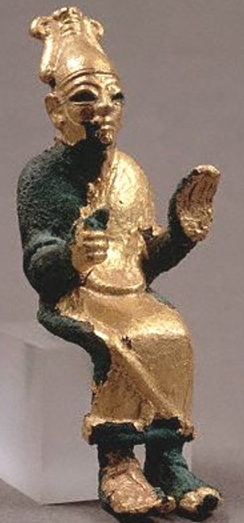

ברך bārak – to bless, praise
Semantic Fields:
Blessing
Author(s):
James K. Aitken
First published: 2024-10-10
Citation: James K. Aitken, ברך bārak – to bless, praise,
Semantics of Ancient Hebrew Database (sahd-online.com), 2024
Introduction
Grammatical Type: verb qal, niphal, piel, pual, hithpael
Occurrences: 327x HB (136/69/122); 14 Sir; 324 Qum; 24 inscr. (Total: 689).
- Torah – qal (20): Gen 9:26; 14:19, 20; 24:27, 31; 26:29; 27:29, 33; Exod 18:10; Num 22:12; 24:9; Deut 7:14; 28:3 (2x), 4, 5, 6 (2x); 33:20, 24;
- Torah – niphal (3): Gen 12:3; 18:18; 28:14
- Torah – piel (108): Gen 1:22, 28; 2:3; 5:2; 9:1; 12:2, 3 (2x); 14:19; 17:16 (2x), 20; 22:17 (2x); 24:1, 35, 48, 60; 25:11; 26:3, 12, 24; 27:4, 7, 10, 19, 23, 25, 27 (2x), 29, 30, 31, 33, 34, 38, 41; 28:1, 3, 6 (2X); 30:27, 30; 32:1, 27, 30; 35:9; 39:5; 47:7, 10; 48:3, 9, 15, 16, 20 (2x); 49:25, 28 (2x); Exod 12:32; 20:11, 24; 23:25; 39:43; Lev 9:22, 23; Num 6:23, 24, 27; 22:6; 23:11 (2x), 20 (2x), 25 (2x); 24:1, 9, 10 (2x); Deut 1:11; 2:7; 7:13 (2x); 8:10; 10:8; 12:7; 14:24, 29; 15:4 (2x), 6, 10, 14, 18; 16:10, 15; 21:5; 23:21; 24:13, 19; 26:15; 27:12; 28:8, 12; 30:16; 33:1, 11;
- Torah – pual (2): Num 22:6; Deut 33:13;
- Torah – hithpael (3): Gen 22:18; 26:4; Deut 29:18;
- Nebiim – qal (23): Judg 17:2; 1 Sam 15:13; 23:21; 25:32, 33 (2x), 39; 26:25; 2 Sam 2:5; 18:28; 22:47; 1 Kgs 1:48; 2:45; 5:21; 8:15, 56; 10:9; Isa 19:25; 65:23; Jer 17:7; 20:14; Ezek 3:12; Zech 11:5;
- Nebiim – piel (40): Josh 8:33; 14:13; 17:14; 22:6, 7, 33; 24:10 (2x); Judg 5:2, 9; 13:24; 1 Sam 2:20; 9:13; 13:10; 25:14; 2 Sam 6:11, 12, 18, 20; 7:29; 8:10; 13:25; 14:22; 19:40; 21:3; 1 Kgs 1:47; 8:14, 55, 66; 21:10, 13; 2 Kgs 4:29 (2x); 10:15; Isa 19:25; 51:2; 61:9; 66:3; Jer 31:23; Hag 2:19;
- Nebiim – pual (3): Judg 5:24 (2x); 2 Sam 7:29;
- Nebiim – hithpael (3): Isa 65:16 (2x); Jer 4:2;
- Ketubim – qal (28): Pss 18:47; 28:6; 31:22; 41:14; 66:20; 68:20, 36; 72:18, 19; 89:53; 106:48; 115:15; 118:26; 119:12; 124:6; 135:21; 144:1; Prov 5:18; Ruth 2:19, 20; 3:10; 4:14; Ezra 7:27; 1 Chron 16:36; 29:10; 2 Chron 2:11; 6:4; 9:8;
- Ketubim – piel (85): Pss 5:13; 10:3; 16:7; 26:12; 28:9; 29:11; 34:2; 45:3; 49:19; 62:5; 63:5; 65:11; 66:8; 67:2, 7, 8; 68:27; 72:15; 96:2; 100:4; 103:1, 2, 20, 21, 22 (2x); 104:1, 35; 107:38; 109:28; 115:12 (3x), 13, 18, 26; 128:5; 129:8; 132:15 (2x); 134:1, 2, 3; 135:19 (2x), 20 (2x); 145:1, 2, 10, 21; 147:13; Job 1:5, 10, 11; 2:5, 9; 31:20; 42:12; Prov 3:33; 27:14; 30:11; Ruth 2:4; Neh 8:6; 9:5 (2x); 11:2; 1 Chron 4:10 (2x); 13:14; 16:2, 43; 17:27 (2x); 18:10; 23:13; 26:5; 29:10, 20 (2x); 2 Chron 6:3; 20:26; 30:27; 31:8, 10.
- Ketubim – pual (8): Pss 37:22; 112:2; 113:2; 128:4; Job 1:21; Prov 20:21; 22:9; 1 Chron 17:27;
- Ketubim – hithpael (1): Ps 72:17.
- Sira – qal: 51:30B;
- Sira – piel: 31[34]:10B, 23B; 32[35]:13B; 33[36]:9E ( ]ב֯רך); 39:35B; 41:1B;1 43:11B,Mas; 44:21B; 45:15B, 25B; 50:22B; 51:12B;
- Sira – pual: 51:30B.
- Qumran: see Aitken, The Semantics of Blessing and Cursing, 88-89.
- Inscriptions.: see Aitken, The Semantics of Blessing and Cursing, 89.
The qal is attested only as the passive participle: בָּרוּךְ, בְּרוּכָה, etc.; ‘blessed, praised’. The piel is found 233 times in HB and represents the declarative: ‘to bless, praise’.
6.2 Pictorial Material

An Ugaritic deity, probably El, making a blessing gesture.
7. Conclusion
A.1 The cognates of ברך in other Semitic languages should be seen as those words with a comparable morphology (brk) and with the meaning ‘to bless’ or ‘to praise’. Its connection with verbs denoting ‘to bend the knee’ or nouns denoting ‘pool’ is unlikely, and these words are probably to be derived from different roots. Attempts to explain the meaning of ברך in the light of these cognates are not convincing.
A.2 ברך when used of a human subject and divine object may best be translated as ‘to praise’.
A.3 When ברך has God as the subject it denotes the declaring (and thereby making) the object as specially favoured and prosperous.
A.4 When ברך has both a human subject and a human object, it denotes the expressing of the favour conferred on the person by God.
A.5 A formulaic use of ברך in the agreeing of a covenant or treaty is comparable to the use of ארר in the same context.
A.6 A second formulaic use of ברך is a part of a greeting, especially at the beginning of letters.
A.7 The euphemistic use of ברך to denote ‘to curse’, especially when the object is God, established it in such cases as a synonym of קלל piel.
For this entry, see further James K. Aitken, The Semantics of Blessing and Cursing in Ancient Hebrew (2007), 88-117 (Printed publications).
-
יברך in B, ז]כׄרׄךׄ] in Mas. ↩